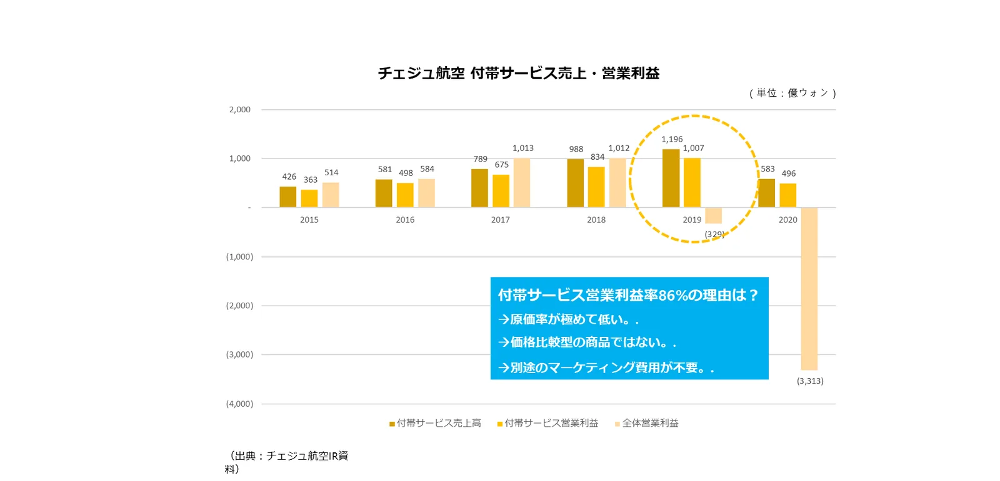

なぜ付帯サービスなのか

- 原価率が低い。座席や手荷物スペースはすでにある資源です。
- 価格比較型の商品ではない。航空券のような最安値競争に巻き込まれません。
- マーケティング費用がほとんどかからない。航空券を買った旅行者にそのまま提案できます。
お金の流れ
- 旅行者が販売先（旅行会社・OTA）の画面で、航空券と一緒に、または発券後に付帯サービスを購入します。
- オールウィンエアが決済を処理し、供給元（航空会社・付帯サービス事業者）に購入内容を伝えます。
- 供給元は新しいチャネルから売上を得て、販売先は販売手数料を受け取ります。
- オールウィンエアは連携・運用・CS・精算を担う対価として手数料を受け取ります。販売先に開発費や運用費の負担はほとんどありません。
手数料率などの具体的な条件は、提携先ごとの契約で定めます。
全員が得をする仕組み（ALLWINOMICS）
供給元（航空会社・付帯サービス事業者）
これまで：自社サイトでのみ付帯サービスを販売
→ 航空券販売の70〜90%を占める旅行会社チャネルまで販売を拡大。販売先ごとの個別連携なしで追加売上
販売先（旅行会社・OTA・プラットフォーム）
これまで：航空券販売の低いインセンティブのみ
→ 付帯サービスの販売手数料という新たな収益源。開発・CS・精算の負担なしで販売
旅行者
これまで：付帯サービスは航空会社サイトや空港でのみ購入
→ 予約した場所で航空券＋付帯サービスをワンストップ購入。希望の座席を早めに確保、空港での待ち時間も短縮
| 区分 | コスト削減 | 時間短縮 | 売上増加 |
|---|---|---|---|
| 旅行者 | 空港での当日購入より最大約30%お得 | 希望の座席を早めに確保、空港での待ち時間を短縮 | — |
| 販売先 | 航空会社ごとの直接連携と比べて約1/8のリソース | 開発・CS・精算の負担を解消 | 付帯サービスの販売手数料という新たな収益源 |
| 供給元 | 旅行会社ごとの直接連携と比べて約1/20のリソース | 販売先管理の負担を解消 | 旅行会社チャネルの売上を追加 |
韓国の航空会社8社、旅行会社20社の提携を仮定した推計。割引率は航空会社・商品によって異なります（2021年の提携提案資料より）。
つながるほど、収益も大きくなります
一度つながった販売先には、新しい供給元と商品が次々に追加されます。販売先は追加開発なしで売れる商品が増え、供給元は追加の営業なしで販売先が増えます。オールウィンエアのサービスが広がるほど、提携先の収益性は継続して高まります。サービス拡大を見る →
よくあるご質問
- 販売先（旅行会社）はどのように収益を得ますか？
- 旅行者が販売先の画面で付帯サービスを購入すると、販売先は販売手数料を受け取ります。航空券のインセンティブとは別の新たな収益源で、具体的な条件は契約で定めます。
- 供給元（航空会社）にはどのようなメリットがありますか？
- 自社サイトにとどまっていた付帯サービスの販売が、旅行会社・OTAチャネルまで広がります。販売先ごとの個別連携が不要で、販売先管理・CS・精算の負担も減ります。
- 提携先が負担する費用はありますか？
- オールウィンエアは販売が発生したときに手数料を受け取る仕組みのため、提携先の初期開発・運用の負担は小さくなります。詳細は提携のご相談時にご案内します。
オールウィンエアとの連携を始めましょう
航空会社・付帯サービス提供事業者も、旅行会社・OTA・旅行プラットフォームも、ひとつの連携から始められます。連携方式とスケジュールは提携先の環境に合わせてご相談します。日本語・英語でのお問い合わせも可能です。
提携窓口メール（海外からはメールを推奨）partnership@allwin.co.kr
代表電話（韓国国内・平日 09:00〜18:00 KST）+82 1522-2284